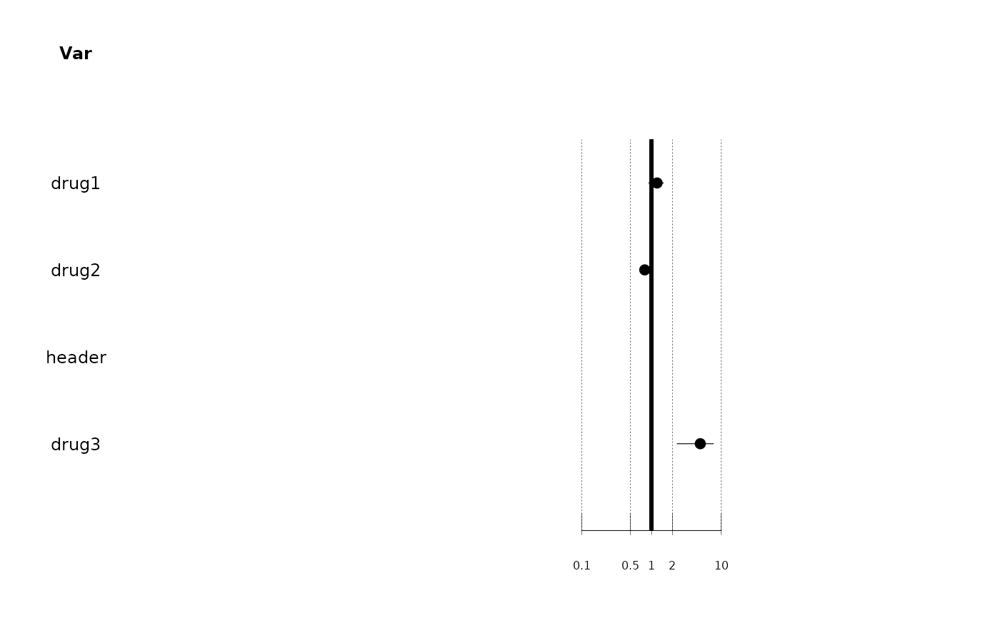
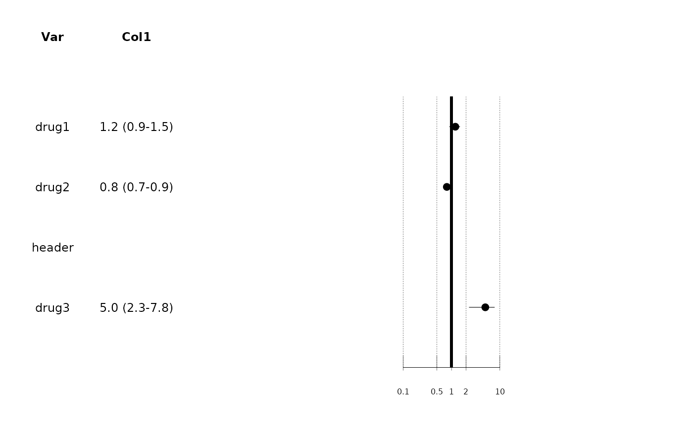
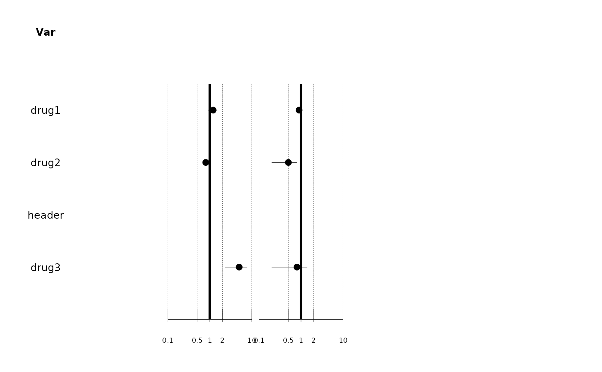
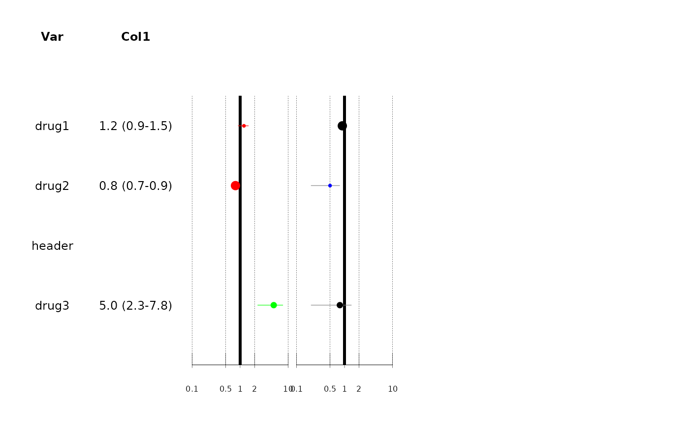

My costum forest plot function
forest_charles.RdCheck the forest_charles vignette for many showcase.
Usage
forest_charles(
path_data,
cols,
cols_name = stringr::str_to_title(cols),
cols_pos,
cols_hjust = rep(0.5, each = length(cols)),
cols_custom = NULL,
cols_custom_fontface = NULL,
est_1,
est_1_low_ci,
est_1_up_ci,
est_1_color = NULL,
est_1_size = NULL,
est_2 = NULL,
est_2_low_ci = NULL,
est_2_up_ci = NULL,
est_2_color = NULL,
est_2_size = NULL,
blank_rows = 2,
title_size = 4,
data_size = 9,
axis_size = 6,
plot_lims = c(0, 30),
ticks = c(0.1, 0.5, 1, 2, 10),
log_scale = TRUE,
size_range = c(1, 3),
graph_width = 5,
graph_height = 3.5,
graphic1distance = 20,
g1_panelcolor = "white",
graphic2distance = NULL,
g2_panelcolor = "white",
keep_grid = FALSE,
tiles = NULL,
tiles_height = 0.5,
tiles_color = "grey",
box_shape = 16
)Arguments
- path_data
character string, path to a .csv data for main plot
- cols
character vector, columns to be printed
- cols_name
character vector of length
length(cols), names to be printed ahead of columns- cols_pos
numeric vector, (probably will be removed in the shiny app) graphic positions to plot the columns. Must be the same length as cols.
- cols_hjust
numeric vector, hjust for cols (same length as cols)
- cols_custom
character vector, columns requiring a special layout for the content.
- cols_custom_fontface
character string, a column with numeric values from 1 to 4, specifying the fontface of cols_custom. 1 plain, 2 bold, 3 italic, 4 bold and italic.
- est_1
character string, column with numeric values for the estimated effect to be plotted on the main plot.
- est_1_low_ci
character string, columns with numeric values for the confidence interval margins on the main plot.
- est_1_up_ci
character string
- est_1_color
character string, column used to define box colors
- est_1_size
character string, column used for est_1 box size.
- est_2
character string, all the same as for est_1, but can be NULL if there is no other plot.
- est_2_low_ci
character string, same as for est_1
- est_2_up_ci
character string, same as for est_1
- est_2_color
character string, same as for est_1
- est_2_size
character string, same as for est_1
- blank_rows
numeric, blank rows under boxplot
- title_size
numeric
- data_size
numeric
- axis_size
numeric
- plot_lims
numeric vector length 2, overall plot limits (including space for columns printing, see details)
- ticks
numeric vector, plot ticks on the axis.
- log_scale
logical, should scale be log-transformed?
- size_range
numeric length 2, min and max size of box plots.
- graph_width
numeric, output graphics dimensions
- graph_height
numeric, output graphics dimensions
- graphic1distance
numeric, main plot position
- g1_panelcolor
character string, color of graphic 1 panel
- graphic2distance
numeric, second plot position
- g2_panelcolor
character string, color of graphic 2 panel
- keep_grid
logical, do you want to print the underlying grid? Helps for positionning columns
- tiles
character string, column indicating lines that need a rectangle
- tiles_height
a numeric, half-height of tiles. Defaults to 0.5
- tiles_color
character string, color to fill tiles with
- box_shape
a numeric, shape of boxes, see ggplot2 cheatsheet
Details
The present one is based on ggplot2. Starts back from scratch. You should provide a single file for the data, even in the case you want to draw 2 plots. A second file is needed for column name correspondence with some labels. Use plot_lims to set the overall plot limits, i.e. including space for printing cols. Use ticks to set the estimate plot limits (conditions the use of arrows for outsider values). cols_custom can be used if you want the content of some columns to be customized (some rows in plain text, others in
bold, etc.). Many more examples can be found in the vignette.
Examples
df <-
dplyr::tibble(
var = c("drug1", "drug2", "header", "drug3"),
e1 = c(1.2, 0.8, NA, 5.0),
e1_lci = c(0.9, 0.7, NA, 2.3),
e1_uci = c(1.5, 0.9, NA, 7.8),
col1 = vigicaen::cff(e1,
low_ci = e1_lci,
up_ci = e1_uci,
method = "num_ci",
dig = 1),
e1_size = c(1, 10, NA, 3),
e2_size = c(10, 1, NA, 3),
color = ifelse(e1_lci > 1, "green", "red"),
is_header = ifelse(
is.na(e1),
2,
1),
e2 = c(0.9, 0.5, NA, 0.8),
e2_lci = c(0.8, 0.2, NA, 0.2),
e2_uci = c(1.0, 0.8, NA, 1.4),
e2_color = ifelse(e2_uci < 1, "blue", "black"),
tiles_guide = c(1, 0, 0, 1)
)
# you can use a data.frame directly
forest_charles(
path_data = df,
cols = "var",
cols_pos = c(1),
est_1 = "e1",
est_1_low_ci = "e1_lci",
est_1_up_ci = "e1_uci"
)
#> Warning: The `margin` argument should be constructed using the `margin()` function.
#> Warning: All aesthetics have length 1, but the data has 4 rows.
#> ℹ Please consider using `annotate()` or provide this layer with data containing
#> a single row.
#> Warning: All aesthetics have length 1, but the data has 4 rows.
#> ℹ Please consider using `annotate()` or provide this layer with data containing
#> a single row.

# or use a csv file
dir <- tempdir()
write.csv2(df, paste0(dir, "/", "test_df_for_forest_charles.csv"),
row.names = FALSE)
forest_charles(
path_data = paste0(dir, "/", "test_df_for_forest_charles.csv"),
cols = "var",
cols_pos = c(1),
cols_hjust = 0.5,
est_1 = "e1",
est_1_low_ci = "e1_lci",
est_1_up_ci = "e1_uci"
)
#> Warning: The `margin` argument should be constructed using the `margin()` function.
#> Warning: All aesthetics have length 1, but the data has 4 rows.
#> ℹ Please consider using `annotate()` or provide this layer with data containing
#> a single row.
#> Warning: All aesthetics have length 1, but the data has 4 rows.
#> ℹ Please consider using `annotate()` or provide this layer with data containing
#> a single row.
# Plot multiple columns
forest_charles(
path_data = df,
cols = c("var", "col1"),
cols_pos = c(1, 5),
cols_hjust = c(0.5, 0.5),
est_1 = "e1",
est_1_low_ci = "e1_lci",
est_1_up_ci = "e1_uci"
)
#> Warning: The `margin` argument should be constructed using the `margin()` function.
#> Warning: All aesthetics have length 1, but the data has 4 rows.
#> ℹ Please consider using `annotate()` or provide this layer with data containing
#> a single row.
#> Warning: All aesthetics have length 1, but the data has 4 rows.
#> ℹ Please consider using `annotate()` or provide this layer with data containing
#> a single row.
#> Warning: Removed 1 row containing missing values or values outside the scale range
#> (`geom_text()`).

# Plot 2 graphics
forest_charles(
path_data = df,
cols = c("var"),
cols_pos = c(1),
est_1 = "e1",
est_1_low_ci = "e1_lci",
est_1_up_ci = "e1_uci",
graphic1distance = 10,
est_2 = "e2",
est_2_low_ci = "e2_lci",
est_2_up_ci = "e2_uci",
graphic2distance = 15
)
#> Warning: The `margin` argument should be constructed using the `margin()` function.
#> Warning: All aesthetics have length 1, but the data has 4 rows.
#> ℹ Please consider using `annotate()` or provide this layer with data containing
#> a single row.
#> Warning: All aesthetics have length 1, but the data has 4 rows.
#> ℹ Please consider using `annotate()` or provide this layer with data containing
#> a single row.
#> Warning: All aesthetics have length 1, but the data has 4 rows.
#> ℹ Please consider using `annotate()` or provide this layer with data containing
#> a single row.
#> Warning: All aesthetics have length 1, but the data has 4 rows.
#> ℹ Please consider using `annotate()` or provide this layer with data containing
#> a single row.

# Those 2 graphics have separate parameters
forest_charles(
path_data = df,
cols = c("var", "col1"),
cols_pos = c(1, 5),
cols_hjust = c(0.5, 0.5),
est_1_color = "color",
est_1_size = "e1_size",
est_1 = "e1",
est_1_low_ci = "e1_lci",
est_1_up_ci = "e1_uci",
graphic1distance = 10,
est_2_color = "e2_color",
est_2 = "e2",
est_2_low_ci = "e2_lci",
est_2_up_ci = "e2_uci",
est_2_size = "e2_size",
graphic2distance = 15
)
#> Warning: The `margin` argument should be constructed using the `margin()` function.
#> Warning: All aesthetics have length 1, but the data has 4 rows.
#> ℹ Please consider using `annotate()` or provide this layer with data containing
#> a single row.
#> Warning: All aesthetics have length 1, but the data has 4 rows.
#> ℹ Please consider using `annotate()` or provide this layer with data containing
#> a single row.
#> Warning: All aesthetics have length 1, but the data has 4 rows.
#> ℹ Please consider using `annotate()` or provide this layer with data containing
#> a single row.
#> Warning: All aesthetics have length 1, but the data has 4 rows.
#> ℹ Please consider using `annotate()` or provide this layer with data containing
#> a single row.
#> Warning: Removed 1 row containing missing values or values outside the scale range
#> (`geom_text()`).
